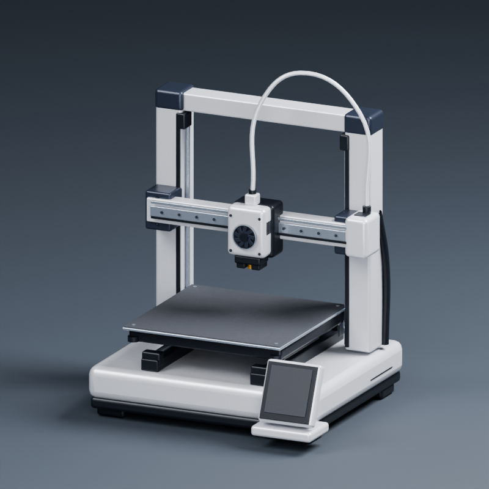
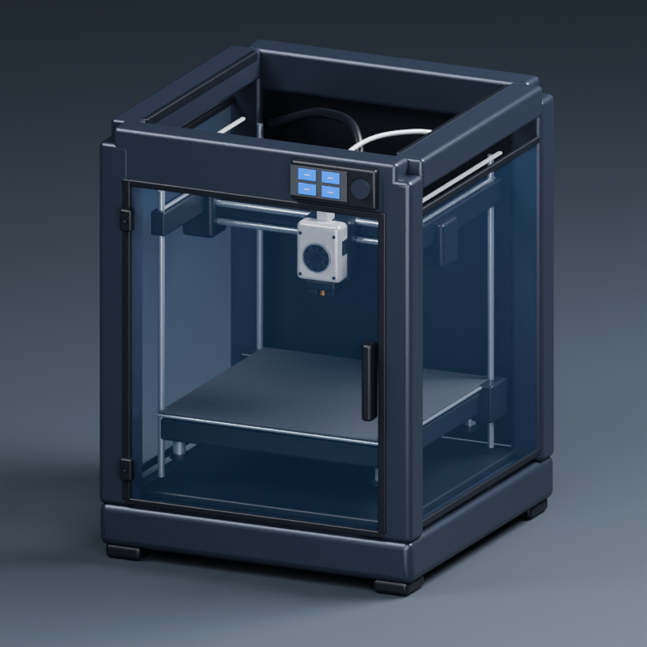
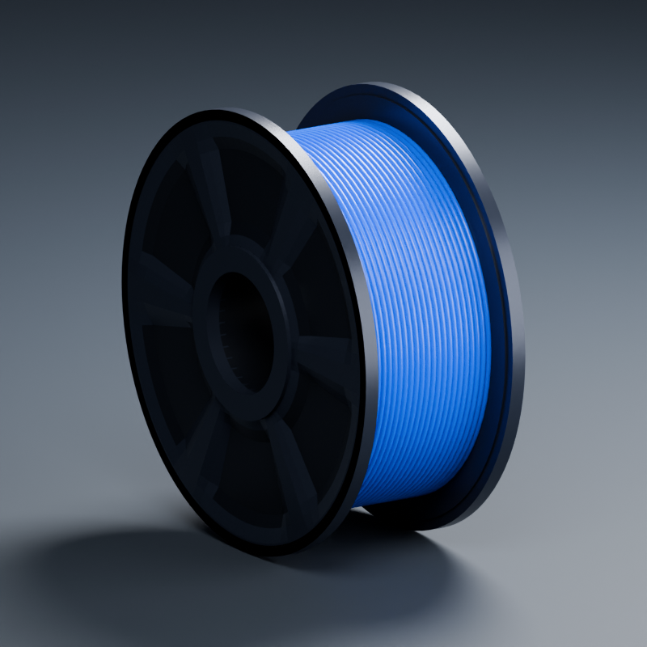
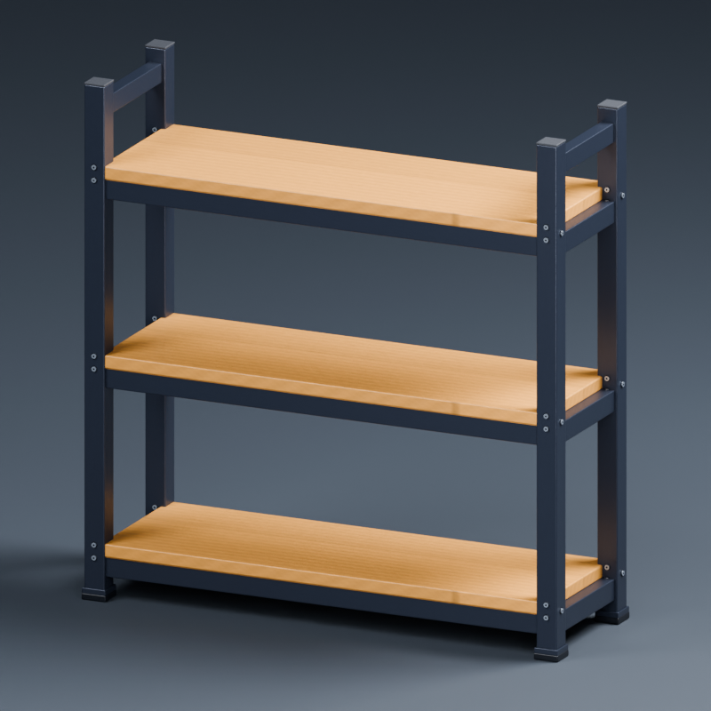
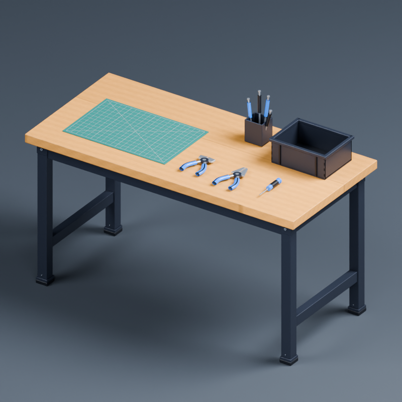
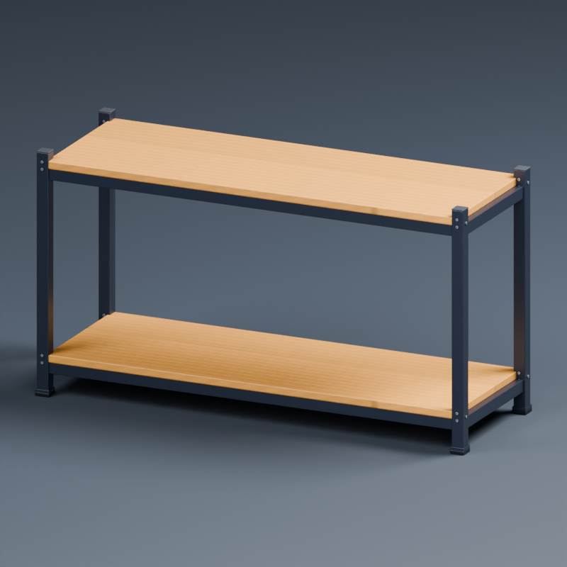
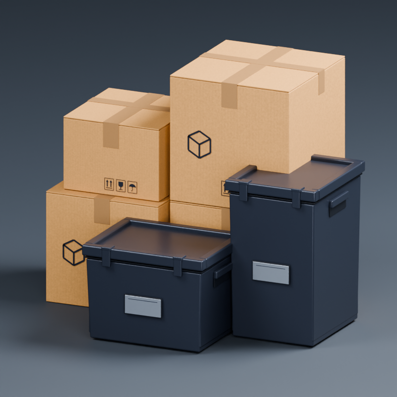
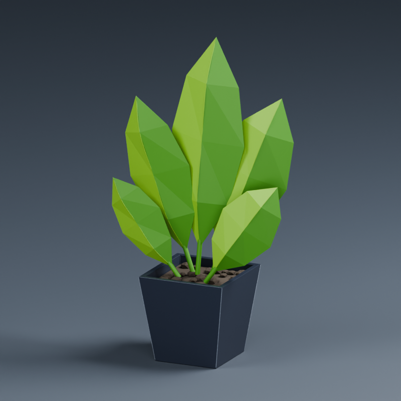
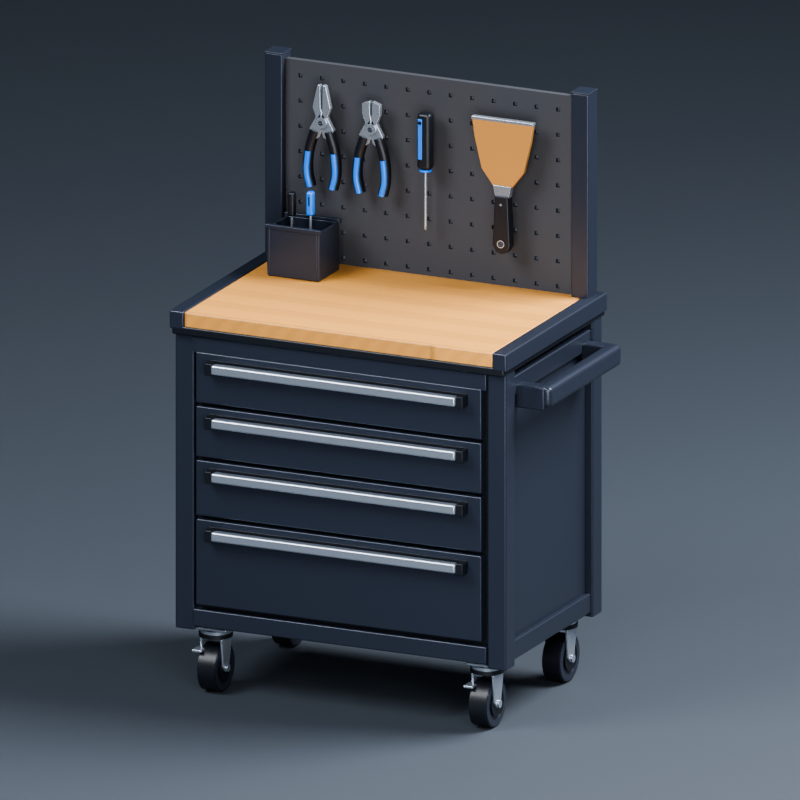
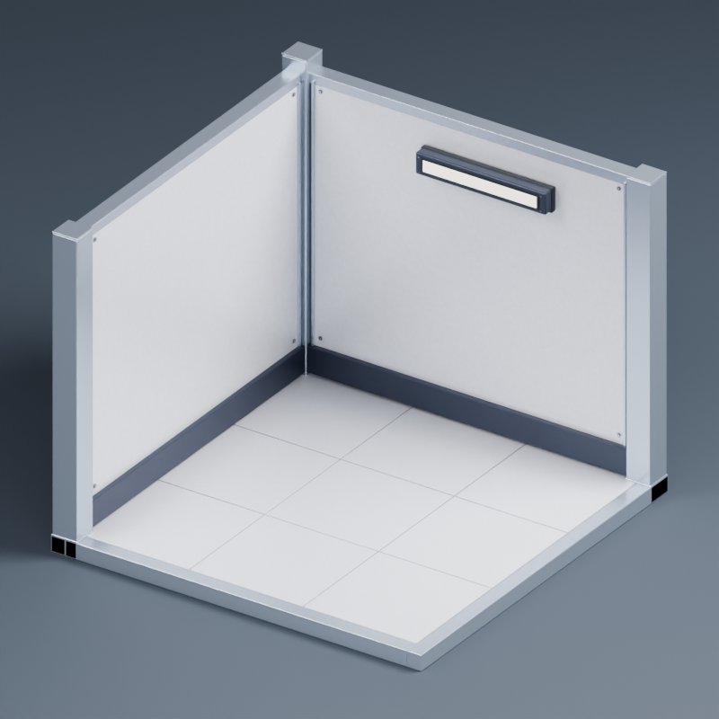

P1 · закрытый корпус
15310 треугольников · 2013 КБ
Катушка
27136 треугольников · 1591 КБ
Стеллаж филамента
13512 треугольников · 2548 КБ
Верстак
17546 треугольников · 2421 КБ
Стойка принтеров
9760 треугольников · 2408 КБ
Коробки и контейнеры
14716 треугольников · 2094 КБ
Растение
6850 треугольников · 1135 КБ
Инструментальная тумба
29908 треугольников · 2762 КБ